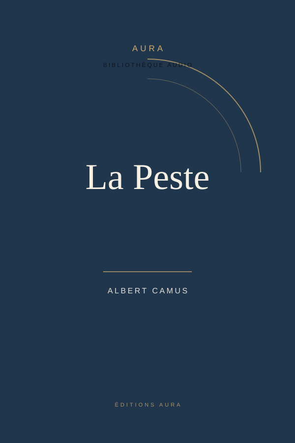

Disponible
Disponible

Les classiques · roman
La Peste
8 h 42
Lu par Camille Delcourt
6 chapitres
Disponible
Quand la peste s'installe à Oran, chacun compose avec l'absence et la solidarité. Une lecture intacte de l'œuvre majeure de Camus, portée par une voix sobre et lumineuse.
RomanFrançaisVoix seule2026
Extrait gratuit
Une minute, sans compte.
Avant de commencer
La peste s'installe à Oran. Le récit suit ceux qui restent, ceux qui partent et ceux qui, simplement, continuent. Rien n'est expliqué d'avance : laissez la voix vous conduire.
Chapitres
Six mouvements, du premier jour au dernier.
- 01I. La ville0:00
- 02II. La peste38:12
- 03III. La quarantaine1:34:05
- 04IV. Les messagers2:41:50
- 05V. Le sacrifice4:02:18
- 06VI. La fin6:58:44
À écouter ensuite
Quatre lectures dans la même veine.